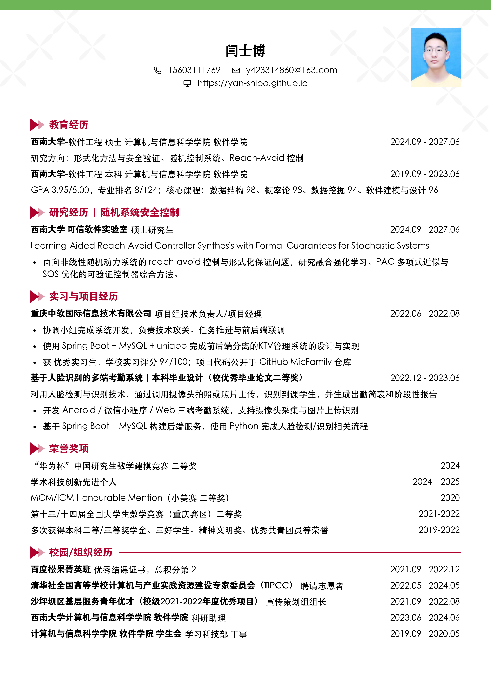

在线简历
这是面向网页阅读的简历摘要页，适合手机和电脑快速浏览。 页面内容与个人主页保持一致，重点概括个人背景、研究方向与简历入口。
姓名：闫士博
方向：随机控制系统 / 形式化方法与安全验证
邮箱：y423314860@163.com
这是面向网页阅读的简历摘要页，适合手机和电脑快速浏览。 页面内容与个人主页保持一致，重点概括个人背景、研究方向与简历入口。
我主要关注随机系统的安全控制与形式化保证，重点研究 reach-avoid 约束下的控制器合成、 强化学习辅助的可验证控制策略设计，以及基于随机 barrier-like certificates、 PAC 近似与 SOS 优化的后验证方法。

This page provides a web-friendly summary of my resume for quick reading on both mobile and desktop devices. Its content is aligned with my homepage, with an emphasis on my background, research interests, and resume access.
My research focuses on safe control and formal guarantees for stochastic systems. I am particularly interested in reach-avoid controller synthesis, reinforcement-learning-aided verifiable control, and post-verification methods based on stochastic barrier-like certificates, PAC approximation, and sum-of-squares optimization.
